Hand weaving,color,form,function.
I am a handweaver living in Western Massachusetts. I want to make beautiful cloth that I can turn into useful items, and I teach workshops for guilds, conferences and schools.
Or write to HillWeaver@gmail.com
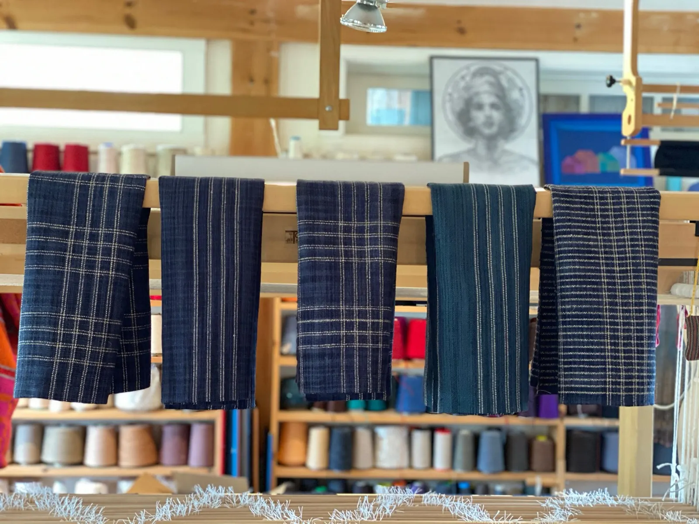
Indigo linen towels in the studioWoven using fine singles linen in a classic plain weave design.
- 25 yearsimmersed in warping, weaving, teaching, designing and writing
- Patternsfor some pieces, through my Etsy shop
- Workshopsfor your guild, conference or school
- Western Massachusettswhere I live and weave
Latest products
Towels, scarves, blankets, napkins and placemats, in linen, cottolin, cotton and wool. Patterns are available for some items.
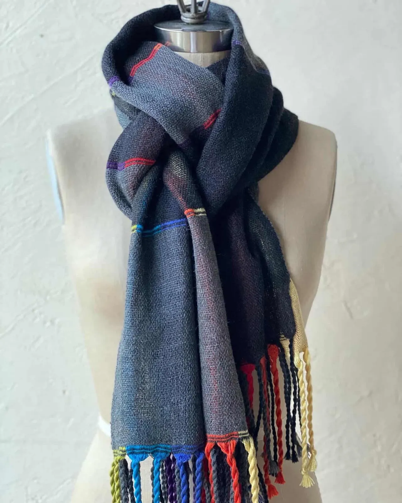
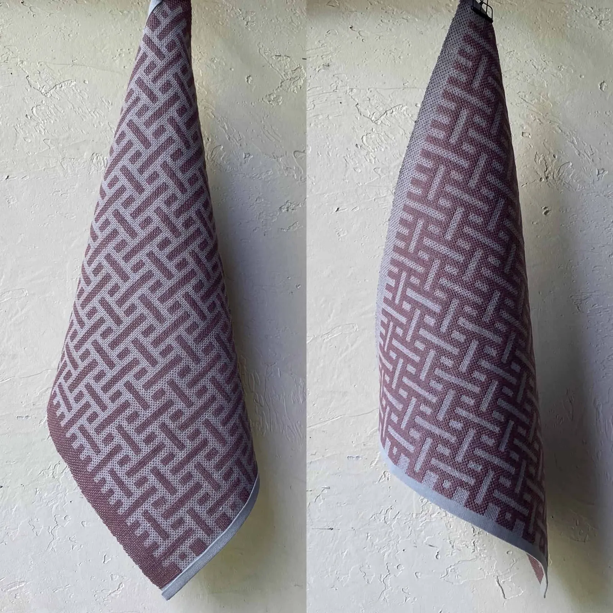
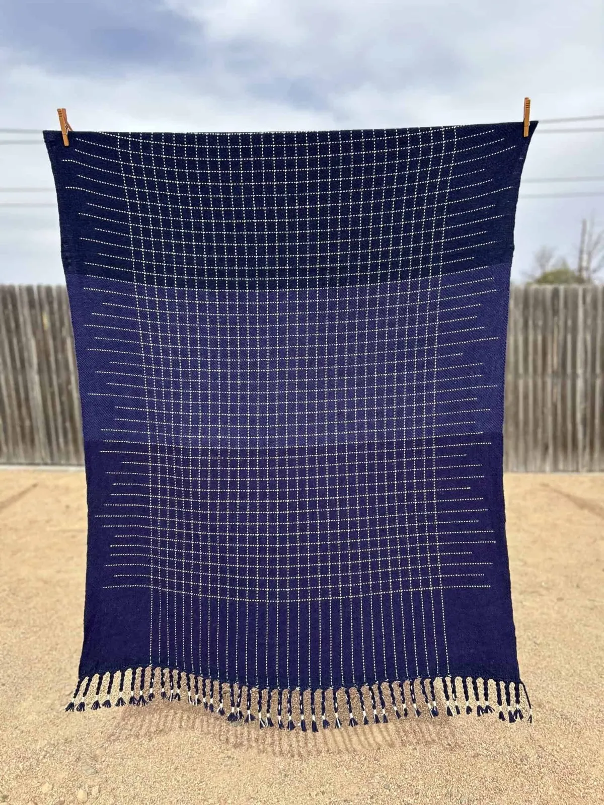
Heavy Meta Towels
Crank it up with these mega meta towels in 2 (or 3) weights of Euroflax linen. The scale of the Meta design is expanded, with a twill tie-down for even more fun Bergman style.
Treadle to the metal!
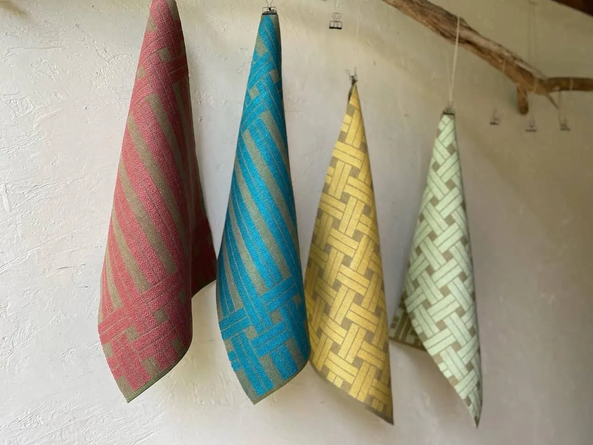
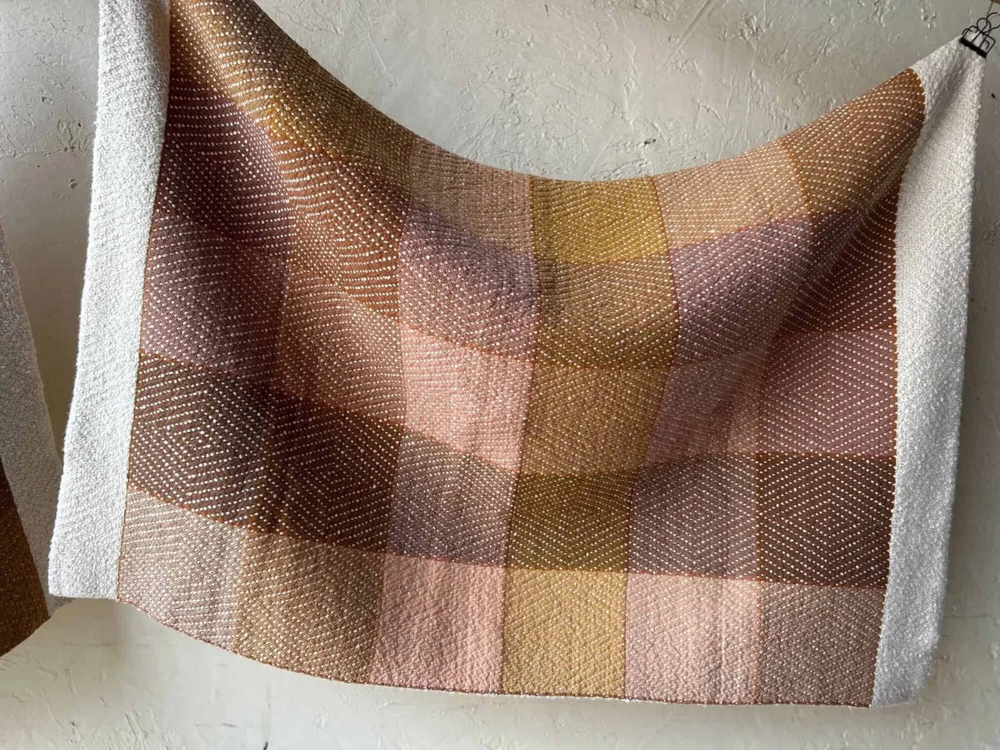
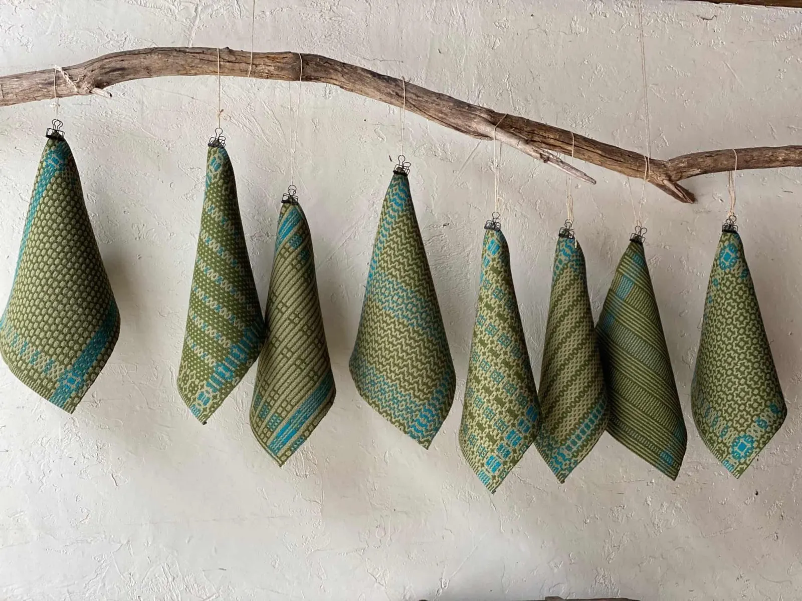
If you’d like to request a pattern for a particular item, leave a comment or contact me.
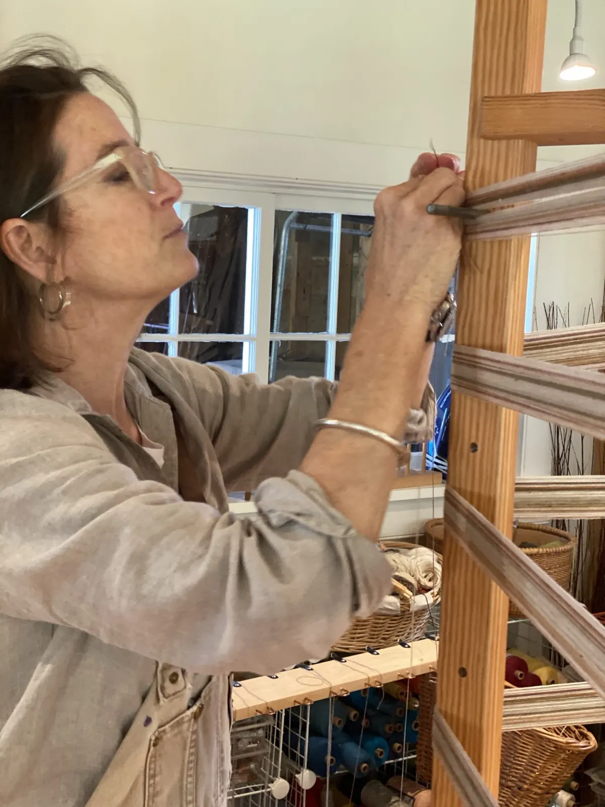
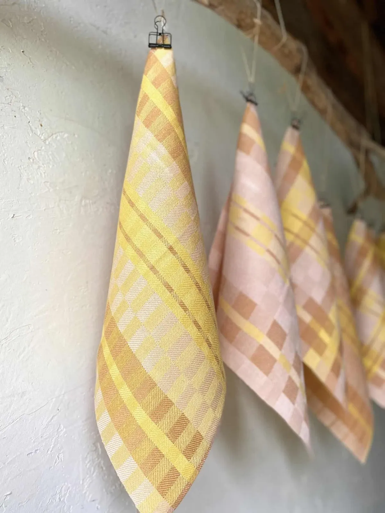
Hey, what’s the big idea?
The Big Idea
I live in Western Massachusetts with my wonderful husband and my very bad dog, in an intermittently empty nest: the degree of emptiness depends on where my three adult children are in their life adventures, and on my current loom count.
I am inspired by my materials, tools and the natural world. I love the well-worn, always-engaging processes of designing, winding, beaming, threading, sleying, weaving and finishing cloth. Serendipity and surprise abound.
I fail a lot, I succeed occasionally, I make cloth, and I know that making cloth connects me to weavers across the world and across time.Read more about me
Book a workshop
I am available to teach workshops at your guild, conference or school. These samples give you an idea of the scope and size of my typical workshops; contact me to discuss a custom workshop for your own guild.
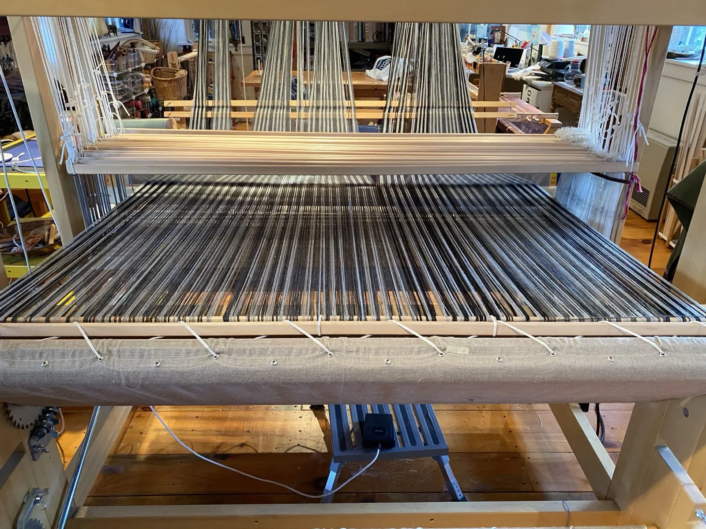
-
Off the Grid
Feeling hemmed in by the ho hum of parallels and perpendiculars? In an on-loom, round-robin format we weave samples in structures that let warp and weft shift and move, creating curves, undulations and textures.
- Length
- 2 to 3 days
- Level
- Able to warp a loom and read a weaving draft
- Class size
- Up to 15
-
Masters of Deflection
Mystery Weave, Deflected Double Weave, Cell Weave: it has as many names as it does possibilities. Participants weave a sampler as a design tool, then use it to design their own scarf.
- Length
- 2, 3, 4 or 5 days
- Level
- Able to warp a loom, change tie-up and follow a draft
- Class size
- 12 to 15
-
Big Blankets Little Looms
Ever wanted to wrap yourself in an adult-size, handwoven throw, but your loom width seems more doll-size? We stretch your loom’s capacity using double wide double weave. I work with each participant on design and colors 6 weeks before.
- Length
- 3 days
- Class size
- Up to 12
Latest news
Notes from the loom for fellow weavers. My pattern-writing partner and I have also created a new website, Groundweave.com.
Taking an Idea for a Walk
Title stolen from the MOMA show “Taking a Thread for a Walk,” which was stolen from Paul Klee, who described a line as “a dot that went for a walk.”
The Grid
Hello Weavers, I am returning to my blog after a long hiatus.
Lovely, Luscious, Linen
A group of weavers admired a set of linen napkins, but agreed that linen is too scary to work with. I want to firmly respond “au contraire!”
Contact
For a workshop, a pattern request, or an event you would like me to attend, please get in touch.
- Name
- Elisabeth Hill
- Phone
- 413.250.1275
- HillWeaver@gmail.com
- Studio
- Western Massachusetts
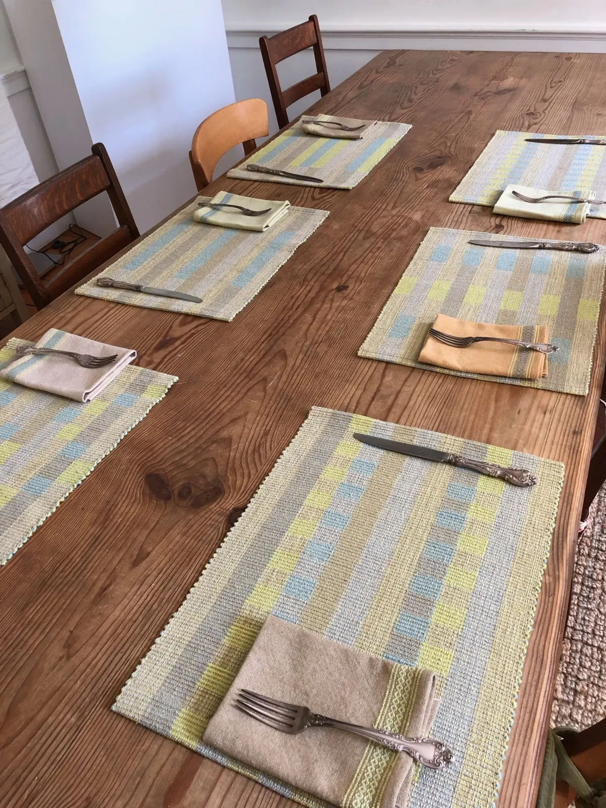
Silk Noil Placemats Set